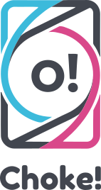
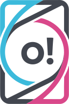

全部为纯路径 SVG，不依赖字体、无背景、已裁到内容边界。直接 <img> 或内联即可用；深色界面用 -light 或 -white。




四周至少留出标识总高度的 22%（虚线区域）。不要在边距内放文字、边框或其他元素。
图标 ≥ 24px；堆叠标识 ≥ 160px 宽；横版 ≥ 200px 宽。更小就只用图标。
不要拉伸、描边、加投影、改渐变，或把墨色部分单独换成其他颜色。
<!-- 直接引用（推荐给静态页面） -->
<img src="brand/choke-lockup.svg" alt="Choke!" width="220">
<!-- 需要跟随文字颜色时：内联 + currentColor -->
<svg class="logo">…choke-lockup-mono.svg 的内容…</svg>
<style>.logo { color: #fff; width: 180px; height: auto; }</style>
<!-- 深色底 -->
<img src="brand/choke-lockup-light.svg" alt="Choke!" width="220">
| 文件 | 用途 |
|---|---|
choke-lockup.svg | 默认主标识，浅底 |
choke-lockup-horizontal.svg | 导航栏 / 页头，横向空间 |
choke-icon.svg | 图标、头像、加载态 |
choke-wordmark.svg | 只保留字标 |
choke-lockup-mono.svg | 单色，跟随 currentColor |
choke-icon-mono.svg | 单色图标 |
choke-lockup-light.svg | 深色底，保留青/粉 |
choke-lockup-white.svg | 深色底，纯白单色 |
png/、favicon.ico | 栅格、社交头像、浏览器图标 |